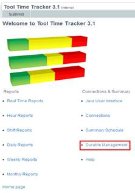

Durable Management
From TTT 3.1 version it includes a durable management module, it allows to manage different durables.
To access it click on durable management in the main page

To access Durable Management module you have to login with your core id and password and must select the equipment type you are going to work with.
After the login, TTT displays the durable management main page
The main menu has these options:
Durable Transition:
Reports and Tracking:
Equipment Inventory:
Log out:
Durable Transition
To make a transition first you must search for the durable that you want to transition, you can search it by ID or by status
After the user selects the durable it is transition to
the transaction page, it contains the current state and has a drop down
list with the possible states to transition, according to the transitions
defined by the administrator. Also the user can
enter the status attributes, such as Workstation, Location, Device_ID. User
can also check the service usage level, if the level is <= 50% the field
will be green. If the level is <=100% the field will be yellow. If the
level is > 100% the field will be red.

Reports for durable are defined in the realtime_durable_reports.txt. They can be accessed from two places.
Invertory report: Go to Equipment Inventory. It is divided by two. The top half is the summary and the bottum half is the actual data. It can also exported in the exel format.